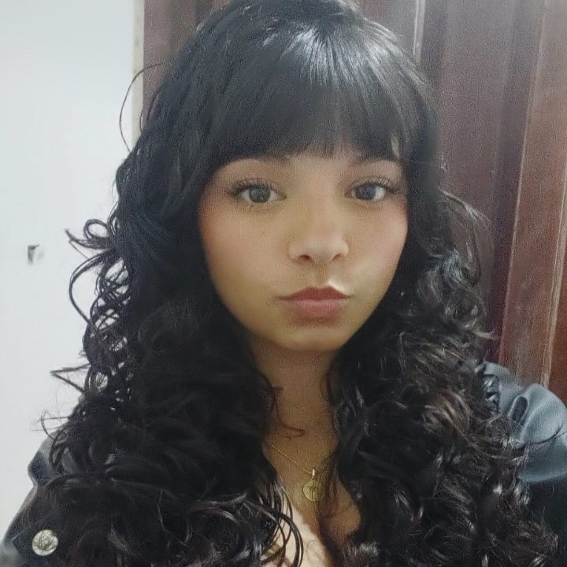

Sobre mim
Tenho 16 anos e sou estudante de Desenvolvimento de Sistemas no Senai Suzano, apaixonada por tecnologia e sempre em busca de evoluir meus conhecimentos. Tenho interesse em aprender Java, Python, JavaScript, HTML/CSS e outras linguagens, além de aprofundar meus estudos em programação, desenvolvimento de software e soluções digitais. Meu objetivo é crescer cada vez mais na área de tecnologia, explorando diferentes ferramentas e construindo uma base sólida para uma carreira inovadora.
Curiosidades sobre mim
- Amo ler romances
- Gosto de jogos online
- Amo meu curso e meus professores
Meus Projetos
- Projeto 1 - Site de tema livre Nos foi designada a tarefa de fazer um site com o tema livre, que tenha um botão para navegar entre as páginas. A partir disso, desenvolvi um site de Resenhas Literárias, onde a primeira sessão era pessoal, e a segunda, sobre o livro escolhido, junto da resenha.
-
Projeto 2 - Receita de ovo frito
Recebemos um desafio: a tarefa de fazer um site com uma receita de ovo frito!
Contato
email maria.e.paes7@aluno.senai.br | rede social GitHub: MariaSPaes | telefone 11958584362